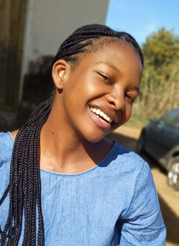

Amma Bossman | WDD130
Hi there, my name is Amma Bossman and I am pleased to be a part of this course. I am a member of the church of Jesus Christ of Latter Day Saints and I am looking forward to working hard and achive my degree in Software Development. I enjoy cooking of which it has become my passion. I also enjoy going out like going for picknics, hiking, swimming and going out to the wild. I enjoy going out to see how beautiful the nature is. By the grace of Heavenly Father I am looking foreard to completing my degree withflying colors, get a good job and change my family situation by getting us a beautiful home, go out on vacations and bring each other together, have a day filled with laughter and create memories that will stay forever. I believe that putting God first in my education will help me succeed and definetly rich my goals. I am soo passionate about being financially stable to help the needy in every way i can.I am the last to be born in a family of 4. I have one brother and two sister and one is married. I am 24 years of age and I am hoping to be married as well. I believe that Heavenly Father loves me unconditionally.